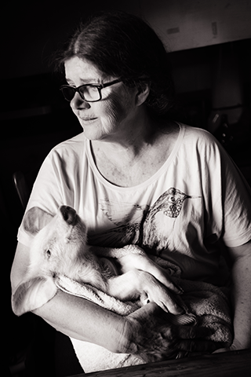
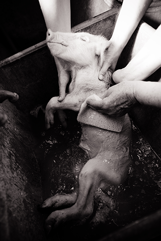
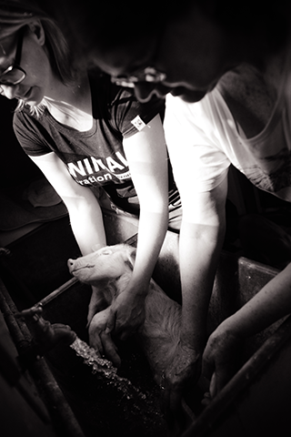

Some animals are socially acceptable to mourn while others are not. In this series of black and white photographs, Patty Mark and her friends and volunteers at her organization, Animal Liberation Victoria, mourn the death of a piglet who had been taken from a farm during an open rescue.
| Year | 2013 |
|---|---|
| Location | Victoria, Australia |
| Photo | Jo-Anne McArthur / Animal Liberation Victoria |
| Link | https://www.weanimalsarchive.org/#/gallery/47;imageid=2981 |